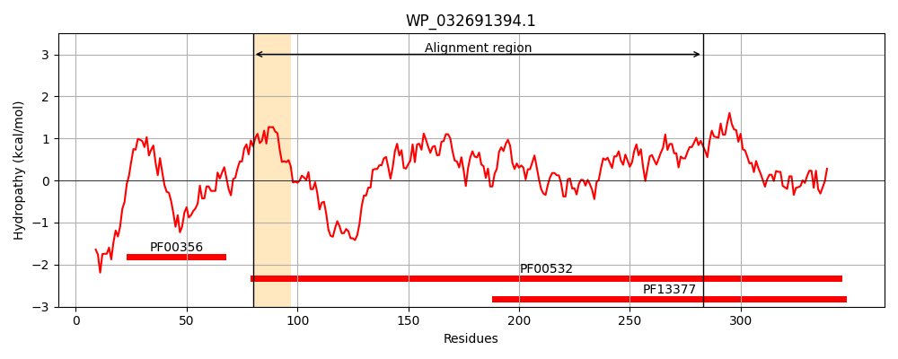
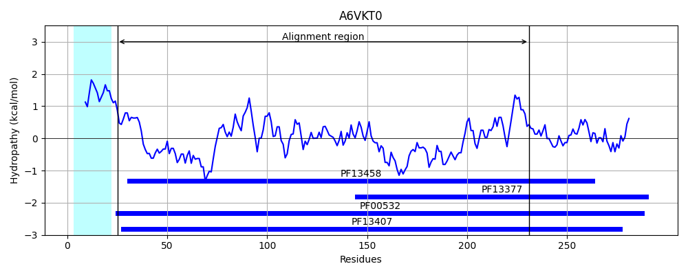
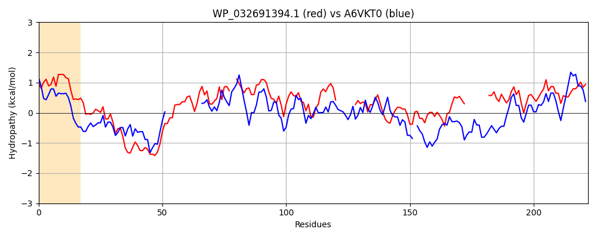

Hit Accession: A6VKT0
Hit TCID: 3.A.1.2.13
Hit Description: gnl|BL_ORD_ID|657 gnl|TC-DB|A6VKT0|3.A.1.2.13 Monosaccharide-transporting ATPase - Actinobacillus succinogenes (strain ATCC 55618 / 130Z).
Mach Len: 222
e:0.000004
Query TMS Count : 1
Hit TMS Count: 1
TMS-Overlap Score: 0.000000
Predicted Substrates:CHEBI:40646;autoinducer-2
BLAST Alignment:
Score: 111 , Bit scores: 47 bits, E-value: 4.1e-06, Alignment length: 222, Percentage identity: 22
Query: 80 DLILAVVPTFSSPGFLPVSEALQKILTERGYTMMFMESGHDGQSEQKTFEKMLAYNPAAIIQFNIDTIESCTQLLANV--DVPILEIGALNTQSVGMCIGVDYGKAVKQIVTHLADASLKN-------IALLCTPANNTMFRQLLSGWNTAMLALNRSPHRVVTTHLPSTIAT---------GVNIFKDMMITWGDLDALICTSDEMACGCMMACHSAGIKV 283
+ I V T +P F+ + + QK TE GY ++ ++S +D E E + T+ LL N + A+ ++ I +D G A ++V+H+A ++ IA + + L+G + A + + H +A+ G+N+ ++++ + G + A+ +DEMA G + A +AG KV
Sbjct: 25 ETIALTVSTLDNPFFVSLKDGAQKKATELGYKLVVLDSQNDPSKELSNVEDL--------------TVRGAKVLLINPTDSAAVSNAVAIANRNKIPVITLDRGAAKGEVVSHIASDNVAGGKMAGDFIAQKLGDGAKVIQLEGLAGTSAAR-ERGEGFKQAIEAHKFDVLASQPADFDRTKGLNVTENLLASKGSVQAIFAQNDEMALGALRAISAAGKKV 231 | Protein Hydropathy Plots: |
|---|
|  |  |
Pairwise Alignment-Hydropathy Plot:
|
|---|
|  |